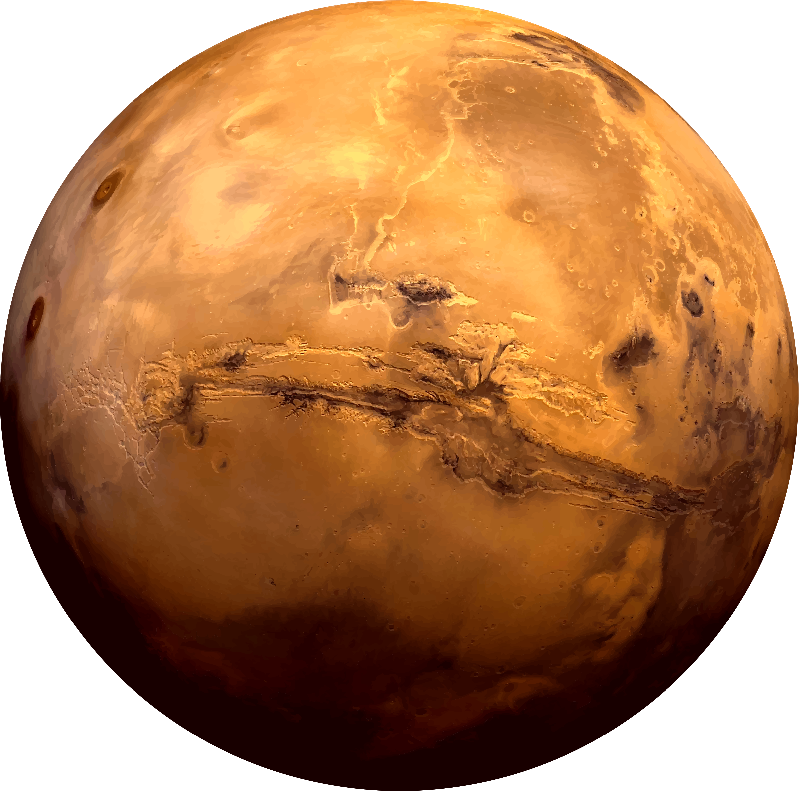
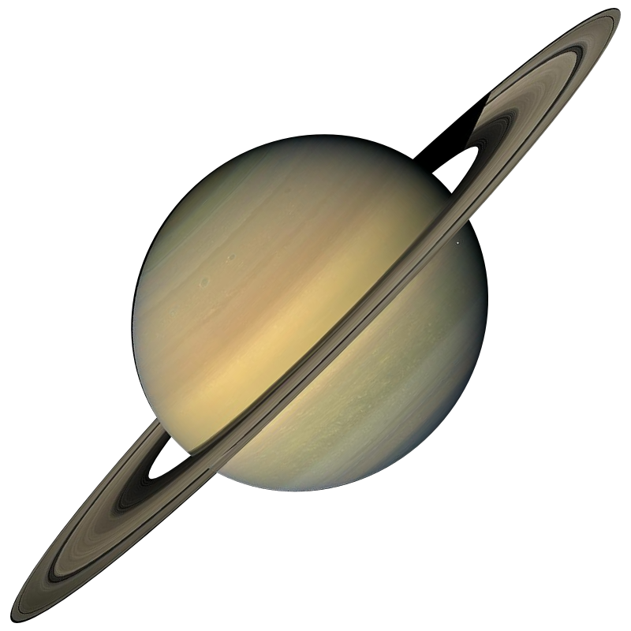

There are more planets than stars in our galaxy. The current count orbiting our star: eight. The inner, rocky planets are Mercury, Venus, Earth, and Mars. NASA's newest rover — Perseverance — landed on Mars on Feb. 18, 2021. The outer planets are gas giants Jupiter and Saturn and ice giants Uranus and Neptune. Beyond Neptune, a newer class of smaller worlds called dwarf planets reign, including longtime favourite Pluto. Thousands more planets have been discovered beyond our solar system. Scientists call them exoplanets (exo means "from outside").
Planets in our Solar System
MERCURY
Mercury—the smallest planet in our solar system and closest to the Sun—is only slightly larger than Earth's Moon. Mercury is the fastest planet, zipping around the Sun every 88 Earth days.


VENUS
Venus spins slowly in the opposite direction from most planets. A thick atmosphere traps heat in a runaway greenhouse effect, making it the hottest planet in our solar system.

EARTH
Earth—our home planet—is the only place we know of so far that’s inhabited by living things. It's also the only planet in our solar system with liquid water on the surface.

MARS
Mars is a dusty, cold, desert world with a very thin atmosphere. There is strong evidence Mars was – billions of years ago – wetter and warmer, with a thicker atmosphere.

JUPITER
Jupiter is more than twice as massive than the other planets of our solar system combined. The giant planet's Great Red spot is a centuries-old storm bigger than Earth.

SATURN
Adorned with a dazzling, complex system of icy rings, Saturn is unique in our solar system. The other giant planets have rings, but none are as spectacular as Saturn's.

URANUS
Uranus—seventh planet from the Sun—rotates at a nearly 90-degree angle from the plane of its orbit. This unique tilt makes Uranus appear to spin on its side.

NEPTUNE
Neptune—the eighth and most distant major planet orbiting our Sun—is dark, cold and whipped by supersonic winds. It was the first planet located through mathematical calculations.